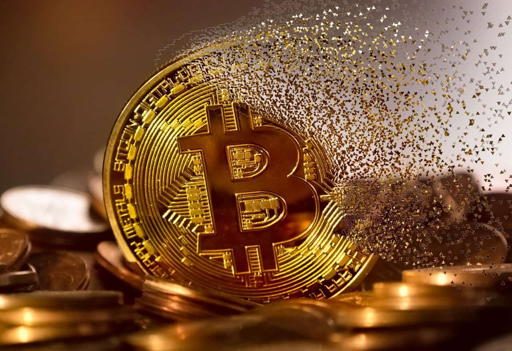

Credit card scams are one of the most common forms of financial fraud, affecting millions of people worldwide. Scammers use various deceptive tactics to steal credit card information, often leading to unauthorized transactions, identity theft, and financial distress for victims.
If you've been a victim of a credit card scam, our fraud recovery experts will guide you through every step of the recovery process, ensuring your financial security is restored and protected against future threats.
Trading scams are increasingly common in today's digital financial world, especially in areas like cryptocurrency, forex, and other investment markets. These scams exploit the promise of high returns and often target inexperienced investors, leaving victims with significant financial losses. If you've been victimized by a trading scam, don't suffer in silence. Our team is dedicated to helping you reclaim your investments and secure your financial future. With expert guidance and comprehensive support, we'll stand by you every step of the way.
Trust is vital in both business and personal relationships, but suspicions of fraud or infidelity can create uncertainty and distress. In the business world, fraudulent partners can undermine your enterprise through actions such as embezzlement, misrepresentation, or tampering with company records. On a personal level, signs of infidelity could include emotional withdrawal, secretive behavior, or unexplained expenses. Our investigative services provide a comprehensive approach to uncovering the truth in both scenarios.
Credit Score Repair
At Rapid Recovery Solutions, we understand how a poor credit score
can limit your financial opportunities, from securing loans to
purchasing a home or even qualifying for a job. Whether caused by
errors, fraud, or financial challenges, a damaged credit score can
feel overwhelming. That's why we offer professional credit score
repair services to help you regain control and rebuild your
financial future.
Let Rapid Recovery Solutions be your
trusted partner in reclaiming your financial health. With our
expertise and support, you can achieve a stronger credit profile
and the confidence to pursue your financial goals.
Recovering Lost Cryptocurrency

Cryptocurrency trading can be highly lucrative, but its volatility
and lack of regulation also make it a prime target for scams and
fraudulent schemes. Many individuals experience devastating losses
due to fraudulent platforms, phishing attacks, or poorly secured
wallets. At Rapid Recovery Solutions, we specialize in helping
victims of cryptocurrency trading losses regain control of their
finances by leveraging our expertise in blockchain technology and
financial recovery.
With our proven methods and personalized approach, we strive to
maximize the chances of recovering your assets while helping you
rebuild confidence in cryptocurrency trading. Trust us to be your
ally in navigating the complexities of the crypto world.
Investigating Cheating Partners
Suspecting a cheating partner can be emotionally distressing, and
when trust is broken, finding the truth becomes crucial for making
informed decisions. One of the most common ways to uncover
infidelity is by reviewing phone activity, as it can reveal texts,
call logs, emails, and social media interactions that might
indicate a partner's disloyalty. At Rapid Recovery Solutions, we
offer discreet and professional services to help individuals gain
access to phone records and data to confirm or dispel their
suspicions.
Using advanced investigative techniques, our team can assist in
retrieving deleted messages, photos, and app data that may have
been hidden or erased. We provide a thorough and confidential
analysis of phone activity, including text conversations, call
histories, location data, and social media accounts.
Recovering Losses from Forex
The forex market, known for its potential high returns, has
unfortunately become a hotspot for scams targeting unsuspecting
traders. Fraudulent brokers, fake investment schemes, and
deceptive trading platforms often lure victims with promises of
guaranteed profits and minimal risk. At Rapid Recovery Solutions,
we specialize in helping victims of forex scams recover their
losses and regain financial stability.
With our dedicated
team by your side, you don't have to face the aftermath of a forex
scam alone. Rapid Recovery Solutions is here to empower you with
the tools and support needed to reclaim your assets and confidence
in trading. Let us help you turn a challenging situation into a
step toward financial resilience.
Investigating Business Partners
Trust is essential in any business partnership, but when you
suspect fraud, it can threaten the very foundation of your
enterprise. Fraudulent activities by a business partner, such as
embezzlement, misrepresentation, or asset misappropriation, can
lead to significant financial losses and reputational damage. At
Rapid Recovery Solutions, we specialize in thoroughly
investigating suspicious business partners to uncover fraudulent
practices and protect your interests.
Our team conducts
comprehensive background checks, financial audits, and digital
forensics to identify any irregularities, hidden assets, or
fraudulent transactions. We also analyze business records and
communications to detect any signs of dishonesty or fraudulent
intentions.
Internet and Online Scams

The internet has become an essential tool for communication,
shopping, and investment, but it also provides ample opportunity
for scammers to exploit unsuspecting individuals. Internet and
online scams can take many forms, from phishing attacks and fake
e-commerce sites to investment fraud and identity theft. At Rapid
Recovery Solutions, we specialize in helping victims of online
scams recover their lost funds and protect their personal
information from further harm.
At Rapid Recovery Solutions,
we are committed to helping you reclaim your financial stability
and peace of mind. With our expertise and support, we guide you
through the process of recovering from online scams and offer
strategies to safeguard your digital life going forward.
Regulated Broker Recovery
Dealing with a regulated broker who has failed to honor their
obligations or has engaged in fraudulent activities can be a
daunting and stressful experience. At Rapid Recovery Solutions, we
specialize in helping individuals recover their investments from
regulated brokers who have violated their trust. Whether you've
encountered issues like unexecuted trades, withdrawal delays,
misrepresentation, or unauthorized transactions, our expert team
is dedicated to helping you navigate the process of recovering
your funds.
We work closely with financial regulators, such
as the FCA, SEC, or CFTC, to hold brokers accountable for their
actions. Our team uses thorough investigative methods to track
your funds, report the broker's actions, and pursue legal avenues
for recovery.
Landlord Services
As a landlord, managing properties and dealing with tenants can
come with a range of challenges, from late payments and property
damage to potential legal disputes. At Rapid Recovery Solutions,
we offer comprehensive services designed to protect your
investments, ensure you are compliant with legal requirements, and
resolve any issues with tenants efficiently and effectively.
Our team provides a range of landlord support services, including
tenant screening, lease enforcement, and debt recovery. If you are
facing issues with non-payment, property damage, or eviction, we
can help by investigating the situation, gathering evidence, and
assisting in legal action when necessary. Additionally, we offer
advice on securing your property from fraud, ensuring rental
agreements are solid, and navigating local landlord-tenant laws.
Residential Rent Arrears
Dealing with tenants who fall behind on rent can be one of the
most stressful aspects of property management. Rent arrears not
only disrupt your cash flow but can also lead to significant
financial strain and potential legal issues. At Rapid Recovery
Solutions, we offer specialized services to help landlords recover
unpaid rent and resolve tenant disputes related to arrears
efficiently and legally.
Our team begins by reviewing the rental agreement and assessing
the situation to determine the best course of action. We assist in
tracking down tenants who have failed to pay, negotiating
repayment plans, and, if necessary, taking legal action to recover
the funds.
Eviction Services
Evicting a tenant is a complex and often emotional process that
requires careful handling to ensure compliance with local laws and
regulations. At Rapid Recovery Solutions, we provide professional
eviction services to help landlords navigate the legalities,
minimize conflicts, and secure the swift removal of tenants who
are in violation of their rental agreements. Whether due to
non-payment of rent, property damage, or other breaches, we are
here to guide you through each step of the eviction process.
Our team helps you understand the legal requirements in your
jurisdiction, ensuring that all notices are served properly and in
compliance with local landlord-tenant laws. We assist with
documentation, including eviction notices and court filings, and
represent your interests in legal proceedings if necessary.
Recovering NFT Scams
The rise of Non-Fungible Tokens (NFTs) has opened up new avenues
for investment, but unfortunately, it has also attracted scammers
exploiting the hype. From fraudulent NFT marketplaces to
misleading projects and fake assets, many investors have lost
significant amounts of money in these scams. At Rapid Recovery
Solutions, we specialize in helping victims of NFT scams recover
their investments and navigate the complexities of digital asset
protection.
Our team utilizes advanced blockchain forensics to trace stolen
NFTs and funds, identify scammers, and work with authorities and
platforms to pursue recovery. We also provide guidance on how to
safeguard your digital investments in the future, such as
verifying the legitimacy of NFT projects, securing digital
wallets, and using trusted marketplaces.
Recovering HyperVerse Scam
The HyperVerse scam, which promised high returns through a
network-based investment model, has left many investors with
significant financial losses. This type of fraudulent scheme often
involves misleading claims of financial success, false promises of
returns, and complex referral systems that ultimately lead to the
collapse of the investment platform. If you've fallen victim to
the HyperVerse scam, Rapid Recovery Solutions is here to help you
navigate the recovery process and regain your lost funds.
Our team of experts uses advanced digital forensics and
investigation techniques to trace transactions, identify
fraudulent activities, and recover your investments. We work
closely with law enforcement agencies and financial regulators to
ensure that scammers are held accountable.